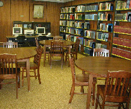

Genealogy
Collection and Services

Mount Clemens Public Library's Genealogy Collection is available whenever the library
is open. The Library's holdings include:
- 3,000 books including major indexes, genealogies and record abstracts
- U.S. census films for Wayne, Oakland, Macomb counties of Michigan
1820-1930
- Suburban
Library Cooperative online digital media archive - thousands of photos
and documents relating to the history of Macomb County's communities (turn
your pop-up blocker off to use search this archive).
- 1930
census index for Macomb County, Michigan
- Birth (1867-1905), marriage (1819-1922) and death (1867-1917) records of Macomb County
on microfilm
- Macomb County, Michigan Chancery Index, 1847-1927
- Macomb County, Michigan Naturalization Index 1839-1982
- Macomb County
Cemetery Master Index
- Macomb County
Obituary Index
- Macomb
County Funeral Home Records Master Index

- Mount Clemens/Macomb County newspapers on microfilm,
1880-present [some small gaps]
- Macomb County
Military Index
- World
War I Draft Registration Index for Macomb County
- World
War I Service Records for Macomb County
- Roll of Honor of Macomb County Men Who Lost Their
Lives in the Service During World War I
- Memorial Record, H.D. Terry Post 216, (Mount Clemens) Grand Army of
the Republic (Civil War records)
- 1890
Special Veterans Census of Macomb County (Civil War veterans)
- Mount Clemens city directories, 1896-1966
- Mount Clemens
City Directory Master Index
- Mount Clemens telephone directory, 1908 [A-F] [G-L] [M-R] [S-Z]
- Mount
Clemens High School Yearbook Master Name Index
- Pageant
of Progress online index
- Old Crowd Memorial List (Deaths,
1880-2006)
- Macomb County deaths transcribed from "Chronology"
in Leeson's History of Macomb County (1882)
- Deaths of early Macomb settlers recorded in Leeson's
History of Macomb County (1882)
- Index of Macomb County entries found in Michigan
Biographies (1924)
- L'Anse Creuse Register - records of marriages and baptisms
of early French settlers, 1833-1841.
- Michigan county histories and plat atlases on microfilm
- 1875 Macomb County map, (with notes on the founding and early
settlers of the township and villages)
- Macomb County Extinct Towns, Railroad Stops &
Place Name Changes
- Deposit collection of the French Canadian
Heritage Society of Michigan
- Nelly D. Metler Ontario collection, including indexes, record abstracts and census
microfilm
- Finding
Your African-American Roots -
a research guide prepared by Mount Clemens Public Library
See our genealogy
and local history pathfinder for detailed information.
The Library is home to the very active Macomb County Genealogy Group,
which meets every other Friday afternoon at 1 PM in the library auditorium, year-round.
Meetings are open to all, so feel free to drop in when you're in the area. Members
of the Genealogy Group volunteer their time as research assistants in the library's
genealogy room during selected hours.
Macomb County Genealogical Research
Assistance has been temporarily suspended due to the illness of our researcher,
Ann Faulkner. Please do not submit requests at this time. We will
post a notice when this service has been restored. Ann thanks you for your
patience and get well wishes.
Other Web Sites With Macomb County Information
- Macomb County GenWeb page,
hosted by Margaret Pecar Fallone - A goldmine of
Macomb County genealogy information, including queries and names of others doing Macomb
research, and Macomb genealogies on the Web
- History
of Macomb County, Michigan by M.A. Leeson - full-text and keyword
searchable
- Past
and Present of Macomb County, Michigan by R.F. Eldredge - full-text and
keyword searchable
- 1859
Macomb County map from Clinton-Macomb Public Library
- 1916
Plat Atlas of Macomb County - from the University of Michigan
- 1895
Plat Atlas of Macomb County - from the University of Michigan
- 1875
Plat Atlas of Macomb County - from the University of Michigan
- Macomb
County Civil War Connections
- Macomb County Death Index,
1945-present - produced by the Macomb County Clerk's Office
- Macomb
County Circuit Court Case Index, 1966-present
- Macomb
County Probate Court Index, 1977-present
- Contributed
Macomb Vital Records - from the Dibean indexes
- 1820 Macomb County
Census - online transcription
- 1830 Macomb
County Census - online transcription
- Draft Index
for WWI for Macomb County, Michigan - from Karen Hemme Rogers
- Find-A-Grave
- MCGG's own Karen Hemme Rogers has contributed lots of local information to
this site. Don't miss it!
- Alexander Macomb
Chapter, DAR
- Shelby
Township Historical Committee - includes an online photo and map archive
- Erin
Township Records Project Online Index - title and surname index, created
by the Roseville Historical & Genealogical Society. Microfilms of the
Erin Township Records are available at Roseville Public Library and Mount
Clemens Public Library. For copies, please contact Mount
Clemens Public Library.
- Richmond
area history and genealogy
- Clinton
Grove Cemetery online - includes searchable index of burials
- Grosse
Pointe News, 1940-present
- although this is Wayne
County, there is a lot of Macomb County crossover which makes this a useful
source for research. Provided by Grosse Pointe Public Library.
- Grosse
Pointe Review, 1930-1952 -
- although this is Wayne County, there is a lot of Macomb County
crossover which makes this a useful source for research. Provided by
Grosse Pointe Public Library.
The library staff has selected the following list of online resources for genealogists.
There are more and more genealogy sites on the World Wide Web daily, and most can be
reached through these excellent collections:
General Collections of Genealogy Links
Places to Search Records Online
- FamilySearch - from the LDS Family History
Library, the world's largest genealogical collection
- USGenWeb Project
- USGenWeb Archives - Genealogists from
around the U.S. are transcribing cemetery records, census records, vital records, family
bibles, letters, and biographies and placing them in the US GenWeb Archives for all to see
and use. A goldmine of information!
- Online
Searchable Death Indexes and Records
- Ellis Island
Records Database - immigration records, 1892-1924.
- Castle
Garden Immigrant Database - immigration records, 1830-1892.
- Canada GenWeb Project
- Ancestry.Com
- French-Canadian Genealogy Books
Online - Scanned collection of history, bibliography and genealogy books
downloadable from the National Library of Quebec.
- National Archives of Canada Miscellaneous
Immigration Index
- Canadian County Atlas Digital
Project - searchable county atlas images from McGill University
- Canadian
Directories: Who Was Where - 19th century Canadian directories,
digitized and searchable, from Library and Archives Canada.
- Champlain
Society Digital Collection - 83 digitized books, including The
Windsor Border Region.
- Hamburg
Emigration Lists
- American Battle Monuments
Commission Databases - search for information on American soldiers,
sailors and airmen buried in American military cemeteries overseas
- RootsWeb
WorldConnect Project - search and view over 5 million (and growing) GEDCOMs submitted
from around the globe
- Internet FamilyFinder -
genealogy search engine from Family Tree Maker
- National Archives Search - search
the partial, but growing online catalog of the National Archives. Includes over 106,000
digital photo and document images which may be viewed and printed online.
- Social Security Death Index
- Veterans
Administration National Gravesite Locator - search for burials in most
of the 120 Veterans Administration national cemeteries
- National
World War II Memorial Registry
- Public
Records Locator
- Online
Family Histories from Brigham Young University - 5,000 titles from the
LDS collection, digitized and searchable
- Michigan
Cemetery Database
- Michigan
County Histories online - 142 full-text, keyword searchable histories,
brought to you by the University of Michigan
- Michigan Death
Records 1867-1886 - includes all information from the record - not just an index!
Additional transcriptions are being added regularly, and the database is planned to cover
deaths through 1897 when completed.
- USGenWeb
Michigan Marriage Archive - contributed records for many Michigan counties
- Naturalization
Indexes for Michigan Counties - searchable indexes for some Michigan
counties from the State Archives of Michigan.
- St. Clair County, Michigan
Death Index, 1868-1974
- 1870 Michigan
Census Online Index - provided by Library of Michigan, publisher of the print version
- Michigan
1883 Pensioners on the Roll - online database from Michigan Family
History Network
- Michigan
1894 Veterans Census - online database from Michigan Family History
Network
- General Land Office Land Patents Search -
search online for land patent records in your ancestor's name in federal land patent
states (including Michigan and much of the midwest). If you have an image viewer on your
computer, you may download and view the actual document!
- Great Lakes Shipping Downward
Bound - a good place to find transcribed records, obituaries and biographies of
ancestors involved in Great Lakes shipping, shipbuilding, or lighthouses
- 1871
Ontario Census Index
- OGS
Ontario Cemetery Index and Locator - new online project from the Ontario
Genealogical Society
- Ontario Cemetery Finding Aid
- a searchable index of over 2 million interments in over 2,000 cemeteries
- British Columbia Cemetery Finding Aid -
searchable index of over 344,000 interments in 141 cemeteries
- British Columbia Archives
Birth Registration Index, 1872-1900
- British Columbia Archives
Death Registration Index, 1872-1980
- British Columbia Archives
Marriage Registration Index, 1872-1925
- New Brunswick
Vital Records Indexes - births (1801-1899) and marriages (1887-1916) searchable online
from the Provincial Archives of New Brunswick, Canada
- Montreal
City Directories, 1844-1950 (page is in French)
- Arizona
Births (1887-1928) and Deaths (1879-1953) - index and images online
- Public
Records of the Colony of Connecticut, 1636-1776
- California
Death Index, 1940-1997
- Colorado
Divorce Records Search, 1851-1939
- Digitized
Connecticut History Books - from Quinnipiac University
- Illinois Public
Domain Land Sales Archive - (19th century)
- Illinois Statewide Marriage
Index 1763-1900 - searchable index from the State of Illinois
- Illinois
Statewide Death Certificate Index, 1916-1950
- Indiana
Marriages Through 1850 - searchable database from the Indiana State Library
- Northern
New York Historical Newspaper Images
- Online Ohio Death Index,
1913-1944
- Pennsylvania
State Archives - includes online images of Revolutionary War military
abstracts and other records
- Kentucky Vital Records Index - search
for death (1911-1992), marriage (1973-1993) and divorce (1973-1993) records online
- Kentuckiana
Digital Library
- Index
to Maine Marriages, 1892-1996
- Massachusetts
Archives Vital Records Search covers 1841-1910
- Minnesota
Death Certificate Index, 1907-1996
- Duluth,
Minnesota Obituary Index
- Missouri
Birth & Death Database pre-1910
- Missouri
Death Index, 1910-1955 (including digitized death certificates)
- Texas Confederate Pension Index
Online - 54,000 Texas Confederate pension claims indexed online
- Texas Death
Records, 1964-1998
- Washington
State digital archives - includes some vital records images!
- West
Virginia Vital Records Search - includes digital copies
- Wisconsin
Births, Pre-1907
- Civil War Soldiers and Sailors
System Name Search - covers more than 5.4 million Union and Confederate
soldiers and sailors
- Sons
of Union Veterans of the Civil War Graves Registration Database
- Michigan Civil War
Regimental Rosters - transcribed from the famous "brown books"
- JewishGen Family Finder - database of
towns and surnames being researched by Jewish genealogists worldwide
- Afrigeneas - African ancestored
genealogy
- Christine's Genealogy Site - a wealth of
information for African-American genealogical research
People Finders - Lost relatives, classmates, friends, adoptees/birth parents
Some Useful Tools
- Library of Congress American
Memory Project - search and retrieve photos and documents from the Library's Prints
and Photographs Division. An unbelievable resource - don't miss it!
- Panoramic Views of American
Towns & Cities - a digital collection from the Library of Congress
- Just1n's Perpetual Calendar
- Passenger Ship Information
- includes arrival dates, ports of entry and embarkation, and much more.
- Palmer
List of Merchant Vessels - includes histories and photos of passenger
ships
- National
Directory of Morticians - search online to find funeral homes in any
locality
- State of Michigan Vital
Records Application Forms - for ordering birth, marriage, death and divorce records
- Michigan County
Clerks Genealogy Directory - addresses, hours, fees, etc.
- 1930
Census Microfilm Locator - this geographic search provided by the
National Archives will help identify reel and enumeration district numbers
- Soundex Conversion
Page - type in a surname and the Soundex code will automatically display
- USGS Geographical Database
Query - provides the exact location of geographic features all over the U.S., right
down to the smallest cow crossing!
- VitalChek - VitalChek Network has an
internet, voice and fax network setup to help people get a
certified copy of a birth certificate, death certificate, marriage certificate and other
vital
records.
[ Home |
Hours and Location | Library
Events | Search
Catalog | Databases and E-Books | Reference Desk | Children's
Services | | Local
History | Digital Media Archive
]
Last update: February 01, 2007